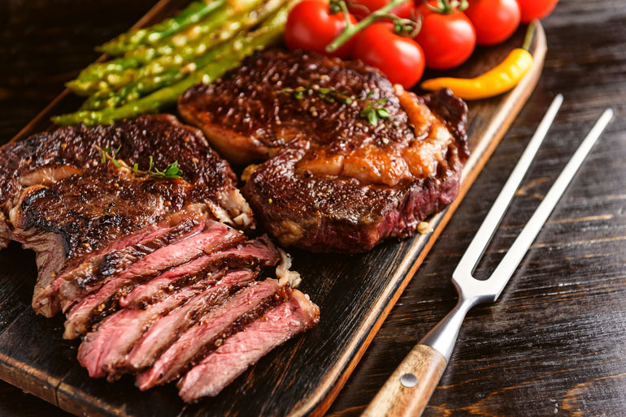

4-6 Pessoas
2-3 Pessoas
Tradicional

Receita Caseira
Romântico
Tradicional

Churrasco Pronto
Início da preparação
Bacalhau à lagareiro
Brownie
Cozinha Ferreira se trata de um blog onde você pode acessar receitas de família, tirar dúvidas, descobrir mais sobre nosso restaurante e cultura.
4-6 Pessoas
2-3 Pessoas
Tradicional
Receita Caseira
Romântico
Tradicional
Churrasco Pronto
Início da preparação
Bacalhau à lagareiro
Brownie
| Receita | Dificuldade | Tempo de Preparo |
|---|---|---|
| Café Da Manhã Simples | Fácil | 30 min |
| Jantar Romântico | Difícil | 3h e 30min |
| Brownie/td> | Média | 1h e 30min |